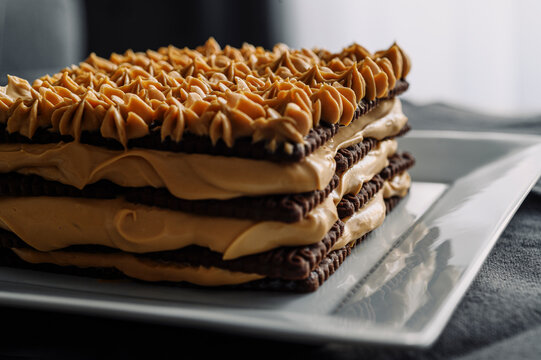

Portafolio de Informática
Primeros Pasos en Diseño Web
Ingredientes
Chocolinas (dos paquetes)
Dulce de Leche (un pote entero)
Queso Crema (75% del pote)
Café (suficiente para mojar todas las chocolinas)
Superficie plana donde hacer la chocotorta
Opcional: Coco, Chispas de colores o de chocolate
Preparación
- Mojar las galletitas levemente en el cafe para que estén humedas pero no pastosas.
- Despues de hacer la priemra capa de galletitas, dejar secar.
- Mientras seca, crear la mezcla del Dulce de Leche con el Queso Crema en un bowl.
- Poner la mezcla arriva de la capa de choclinas hasta que estén totalmente cubiertas.
- Repetir estos pasos hasta llegar a la cantidad deseada de capas.
- Opcional: Añadir Coco o Chispas de colores o de chocolate para decorar al terminar la chocotorta.
